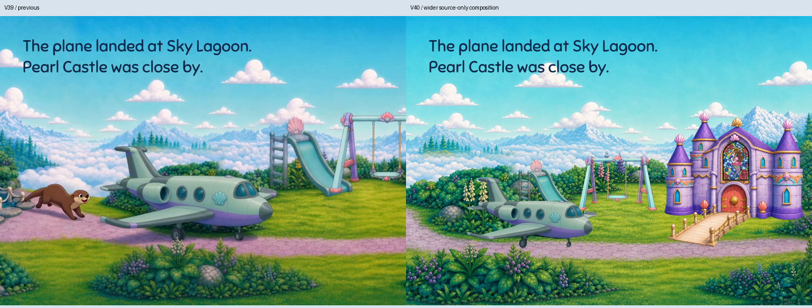
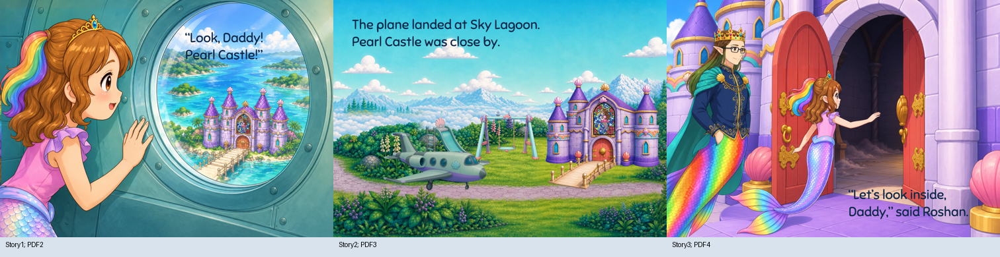
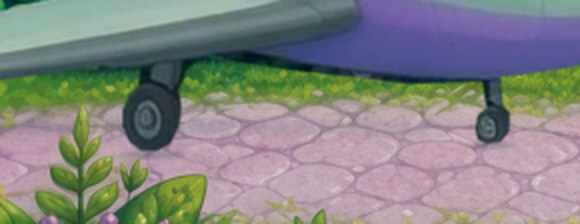
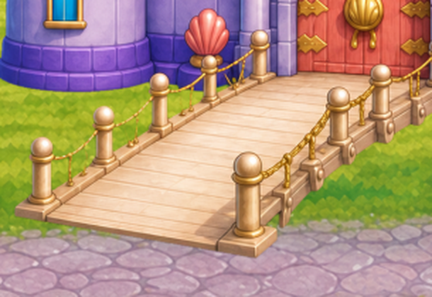

PDF3 / story2 only. Existing landscape, castle and playground cutouts plus exact demo plane pixels. No otter, full-scene redraw or stretched panorama. Condensed book layout, not an exact runtime camera or map.
Read · Email PDF · Layer recipe · Independent critique · Five focused reviews



